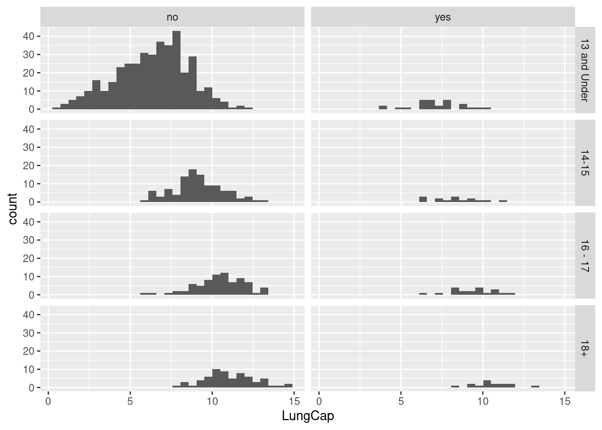

# A tibble: 2 × 2
Smoke Mean
<chr> <dbl>
1 no 7.77
2 yes 8.65
Interestingly, the mean lung capacity is higher for smokers than it is for non-smokers.
d. Examine the relationship between Smoking and Lung Capacity within age groups: “less than or equal to 13”, “14 to 15”, “16 to 17”, and “greater than or equal to 18”.
Code
lcbyagegrp <- lc %>%mutate(age_group =case_when( Age <=13~"13 and Under", Age >=14& Age <=15~"14-15", Age >=16& Age <=17~"16 - 17", Age >=18~"18+")) %>%arrange(age_group, Age)ggplot(lcbyagegrp, aes(x = LungCap)) +geom_histogram() +facet_grid(age_group ~ Smoke)
`stat_bin()` using `bins = 30`. Pick better value with `binwidth`.

e. Compare the lung capacities for smokers and non-smokers within each age group.
`summarise()` has grouped output by 'age_group'. You can override using the
`.groups` argument.
# A tibble: 8 × 3
# Groups: age_group [4]
age_group Smoke Mean
<chr> <chr> <dbl>
1 13 and Under no 6.36
2 13 and Under yes 7.20
3 14-15 no 9.14
4 14-15 yes 8.39
5 16 - 17 no 10.5
6 16 - 17 yes 9.38
7 18+ no 11.1
8 18+ yes 10.5
Is your answer different from the one in part d? What could possibly be going on here
The mean lung capacity for smokers aged 13 and under is higher than that of non-smokers in the same age group, which defies expectation. The rest of the age groups meet that expectation. There may be an error or extreme outlier in the data for smokers aged 13 and under.
f. Calculate the correlation and covariance between Lung Capacity and Age.
Code
lc %>%cov(Age, LungCap)
Error in pmatch(use, c("all.obs", "complete.obs", "pairwise.complete.obs", : object 'LungCap' not found
Code
#correlationcor(lc$LungCap,lc$Age)
[1] 0.8196749
Code
#covariancecov(lc$LungCap, lc$Age)
[1] 8.738289
The correlation is very close to positive 1, indicating a strong positive correlation between between lung capacity and age. The covariance being a positive number indicates a positive relationship.
2) Let X = number of prior convictions for prisoners at a state prison at which there are 810 prisoners.
Code
X <-c(0:4)Frequency <-c(128, 434, 160, 64, 24)df <-data.frame(X, Frequency)df
X Frequency
1 0 128
2 1 434
3 2 160
4 3 64
5 4 24
a. What is the probability that a randomly selected inmate has exactly 2 prior convictions?
Code
df2 <-mutate(df, Probability = Frequency/sum(Frequency))df2
X Frequency Probability
1 0 128 0.15802469
2 1 434 0.53580247
3 2 160 0.19753086
4 3 64 0.07901235
5 4 24 0.02962963
The probability is about 19.75%.
b. What is the probability that a randomly selected inmate has fewer than 2 prior convictions?
Code
b2 <- df2 %>%filter(X <2)sum(b2$Probability)
[1] 0.6938272
The probability is about 69%.
c. What is the probability that a randomly selected inmate has 2 or fewer prior convictions?
Code
c2 <- df2 %>%filter(X <=2)sum(c2$Probability)
[1] 0.891358
The probability is about 89%.
d. What is the probability that a randomly selected inmate has more than 2 prior convictions?
Code
d2 <- df2 %>%filter(X >2)sum(d2$Probability)
[1] 0.108642
The probability is about 10.9%.
e. What is the expected value for the number of prior convictions?
Code
e <-weighted.mean(df2$X, df2$Probability)e
[1] 1.28642
The expected number of prior convictions is about 1.286.
f. Calculate the variance and the standard deviation for the Prior Convictions.
The variance of prior convictions is about 0.857, and the standard deviation (simply, the square root of the variance) is about 0.926.
Source Code
---title: "Homework 1"author: "Lindsay Jones"description: The first homework on descriptive statistics and probability.date: "10/02/2022"format: html: toc: true code-fold: true code-copy: true code-tools: truecategories: - hw1 - desriptive statistics - probability---# Homework 1## SetupFirst I'll load the libraries and read in the data.```{r}library(readr)library(ggplot2)library(dplyr)library(readxl)lc <-read_excel("_data/LungCapData.xls")```## 1) Use the LungCapData to answer the following questions.### a. What does the distribution of LungCap look like?The distribution of lung capacity is as follows:```{r}hist(lc$LungCap)```The histogram appears close to the normal distribution.### b. Compare the probability distribution of the LungCap with respect to Males and Females```{r}boxplot(LungCap~Gender, data=lc)```### c. Compare the mean lung capacities for smokers and non-smokers. Does it make sense?```{r}lc %>%group_by(Smoke) %>%summarize(Mean =mean(LungCap))```Interestingly, the mean lung capacity is higher for smokers than it is for non-smokers.### d. Examine the relationship between Smoking and Lung Capacity within age groups: "less than or equal to 13", "14 to 15", "16 to 17", and "greater than or equal to 18".```{r}lcbyagegrp <- lc %>%mutate(age_group =case_when( Age <=13~"13 and Under", Age >=14& Age <=15~"14-15", Age >=16& Age <=17~"16 - 17", Age >=18~"18+")) %>%arrange(age_group, Age)ggplot(lcbyagegrp, aes(x = LungCap)) +geom_histogram() +facet_grid(age_group ~ Smoke)```### e. Compare the lung capacities for smokers and non-smokers within each age group.```{r}lcbyagegrp %>%group_by(age_group, Smoke) %>%summarize(Mean =mean(LungCap))```#### Is your answer different from the one in part d? What could possibly be going on hereThe mean lung capacity for smokers aged 13 and under is higher than that of non-smokers in the same age group, which defies expectation. The rest of the age groups meet that expectation. There may be an error or extreme outlier in the data for smokers aged 13 and under.### f. Calculate the correlation and covariance between Lung Capacity and Age.```{r}lc %>%cov(Age, LungCap)``````{r}#correlationcor(lc$LungCap,lc$Age)#covariancecov(lc$LungCap, lc$Age)```The correlation is very close to positive 1, indicating a strong positive correlation between between lung capacity and age. The covariance being a positive number indicates a positive relationship.## 2) Let X = number of prior convictions for prisoners at a state prison at which there are 810 prisoners.```{r}X <-c(0:4)Frequency <-c(128, 434, 160, 64, 24)df <-data.frame(X, Frequency)df```### a. What is the probability that a randomly selected inmate has exactly 2 prior convictions?```{r}df2 <-mutate(df, Probability = Frequency/sum(Frequency))df2```The probability is about 19.75%.### b. What is the probability that a randomly selected inmate has fewer than 2 prior convictions?```{r}b2 <- df2 %>%filter(X <2)sum(b2$Probability)```The probability is about 69%.### c. What is the probability that a randomly selected inmate has 2 or fewer prior convictions?```{r}c2 <- df2 %>%filter(X <=2)sum(c2$Probability)```The probability is about 89%.### d. What is the probability that a randomly selected inmate has more than 2 prior convictions?```{r}d2 <- df2 %>%filter(X >2)sum(d2$Probability)```The probability is about 10.9%.### e. What is the expected value for the number of prior convictions?```{r}e <-weighted.mean(df2$X, df2$Probability)e```The expected number of prior convictions is about 1.286.### f. Calculate the variance and the standard deviation for the Prior Convictions.```{r}#variancevariance <- (sum(Frequency*((X-e)^2)))/(sum(Frequency)-1)variance#standard deviationsd <-sqrt(variance)sd```The variance of prior convictions is about 0.857, and the standard deviation (simply, the square root of the variance) is about 0.926.